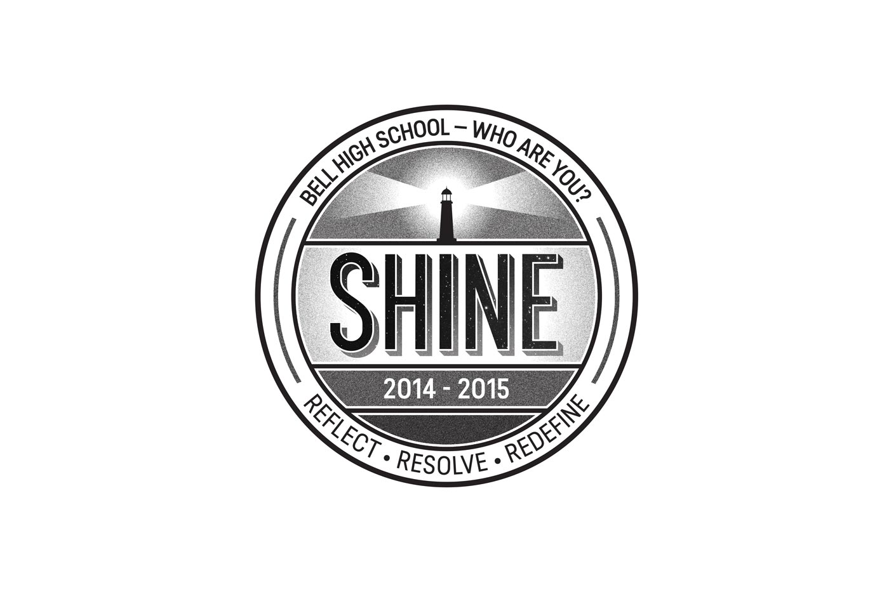
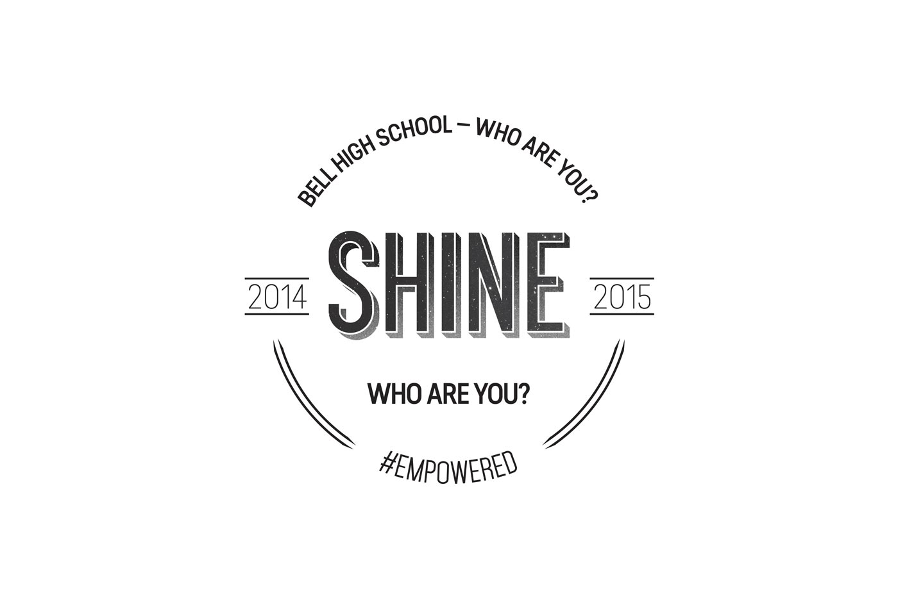

SHINE is for Bell High School's anti-bullying club to be printed on club t-shirts. The project had to inspire and communicate the idea of anti-bullying. In hopes to avoid literally saying anti-bullying, a lighthouse was utilized as a symbolic gesture for individuals withstand on both sunny and stormy days and to be a beacon for others to follow.
This logo embeds the night sky within it. It points towards the Taurus constellation—a dual meaning indicating the bull or in this case a bully and the strength to stand against one.

This badge form was something created outside of the project scope. This design also ended up being used on the tees. This design could have also been used on other media such as buttons, stickers, or fabric patches that the club members could have given away.

Secondary Simplified Badge Form